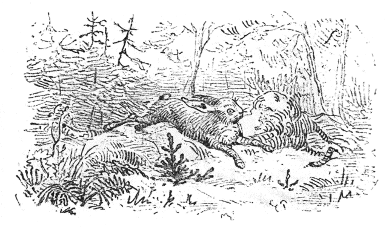
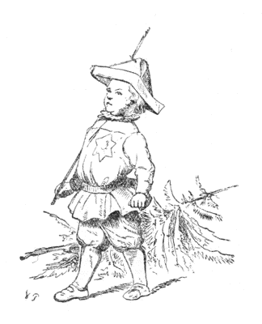

| もみの木 | |
| アンデルセンハンス・クリスチャン | |
| (2012) | |
もみの木
ハンス・クリスティアン・アンデルセン
楠山正雄訳

まちそとの森
に、いっぽん、とてもかわいらしい、もみの木がありました。そのもみの木は、いいところにはえていて、日あたりはよく、風とおしも十分
で、ちかくには、おなかまの大きなもみの木や、はりもみの木が、ぐるりを、とりまいていました。でもこの小さなもみの木は、ただもう大きくなりたいと、そればっかりねがっていました。ですから森のなかであたたかいお日さまの光のあたっていることや、すずしい風の吹くことなどは、なんともおもっていませんでした。また黒いちごや、オランダいちごをつみにきて、そこいらじゅうおもしろそうにかけまわって、べちゃくちゃおしゃべりしている百姓のこどもたちも、気にかからないようでした。こどもたちは、つぼいっぱい、いちごにしてしまうと、そのあとのいちごは、わらでつないで、ほっとして、小さいもみの木のそばに、腰
をおろしました。そして
「やあ、ずいぶんかわいいもみの木だなあ。」
と、いいいいしました。けれど、そんなことをいわれるのが、このもみの木は、いやで、いやで、なりませんでした。
つぎの年、もみの木は新芽
ひとつだけはっきりのび、そのつぎの年には、つづいてまた芽ひとつだけ大きくなりました。そんなふうで、もみの木の歳
は、まいねんふえてゆく節
のかずを、かぞえて見ればわかりました。
小さいもみの木は、ためいきをついて、こういいました。
「わたしも、ほかの木のように大きかったら、さぞいいだろうなあ。そうすれば、枝
をうんとのばして、たかい梢
の上から、ひろい世のなかを、見わたすんだけど。そうなれば、鳥はわたしの枝に巣
をかけるだろうし、風がふけば、ほかの木のように、わたしも、おうように、こっくりこっくりしてみせてやるのだがなあ。」
こんなふうでしたから、もみの木は、お日さまの光を見ても、とぶ鳥を見ても、それから、あさゆう、頭
の上をすうすうながれていく、ばらいろの雲を見ても、ちっともうれしくありませんでした。
やがて冬になりました。ほうぼう雪が白くつもって、きらきらかがやきました。するとどこからか一ぴきの野うさぎが、まい日のように来て、もみの木のあたまをとびこえとびこえしてあそびました。――ああ、じつにいやだったらありません。――でも、それからのち、ふた冬とおりこすと、もみの木はかなり、せいが高くなりましたから、うさぎはもうただ、そのまわりを、ぴょんぴょん、はねまわっているだけでした。
「ああうれしい。だんだんそだっていって、今に大きな年をとった木になるんだ。世のなかにこんなにすばらしいことはない。」
もみの木は、こんなことを考
えていました。
秋になると、いつも木こりがやって来て、いちばん大きい木を二、三本きりだします。これは、まい年のおきまりでした。そのときは、見あげるほど高い木が、どしんという大きな音をたてて、地面
の上にたおされました。そして枝をきりおとされ、太
いみきのかわをはがれ、まるはだかの、ほそっこいものにされて、とうとう、木だかなんだかわけのわからないものになると、この若いもみの木は、それをみてこわがってふるえました。けれども、それが荷車
につまれて、馬にひかれて、森を出ていくとき、もみの木はこうひとりごとをいって、ふしぎがっていました。
みんな、どこへいくんだろう。いったいどうなるんだろう。
春になって、つばめと、こうのとりがとんで来たとき、もみの木はさっそくそのわけをたずねました。
「ねえ、ほんとにどこへつれて行かれたんでしょうね。あなたがた。とちゅうでおあいになりませんでしたか。」
つばめはなんにもしりませんでした。けれどもこうのとりは、しきりとかんがえていました。そしてながいくびを、がってん、がってんさせながら、こういいました。
「そうさね、わたしはしっているとおもうよ。それはね、エジプトからとんでくるとちゅう、あたらしい船
にたくさん、わたしは出あったのだが、どの船にもみんな、りっぱなほばしらが立っていた。わたしはきっと、このほばしらが、おまえさんのいうもみの木だとおもうのだよ。だって、それにはもみの木のにおいがしていたもの。そこで、なんべんでも、わたしはおことづけをいいます。大きくなるんだ、大きくなるんだってね。」
「まあ、わたしも、遠い海をこえていけるくらいな、大きい木だったら、さぞいいだろうなあ。けれどこうのとりさん、いったい海ってどんなもの。それはどんなふうに見えるでしょう。」
「そうさな、ちょっとひとくちには、とてもいえないよ。」
こうのとりはこういったまま、どこかへとんでいってしまいました。そのとき、空の上でお日さまの光が、しんせつにこういってくれました。
「わかいあいだが、なによりもいいのだよ。ずんずんのびて、そだっていくわかいときほど、たのしいことはないのだよ。」
すると、風も、もみの木にやさしくせっぷんしてくれました。つゆもはらはらと、しおらしいなみだを、かけてくれました。けれどももみの木には、それかどういうわけかわかりませんでした。
クリスマスがちかくなってくると、わかい木がなんぼんもきりたおされました。なかには、このもみの木よりもわかい小さいのがありましたし、またおない年ぐらいのもありました。ですからもみの木は、じぶんも早くよその世界
へでたがって、まいにち、気が気でありませんでした。そういうわかい木たちは、なかでも、ことに枝ぶりの美しい木でしたから、それなりきられて、車につまれて、馬にひかれて、森をでていきました。
「どこへいくんだろう。あの木たちは、みんな、わたしより小さいし、なかにはずっと小さいのもある。それからまた、なんだって、枝をきりおとされないんだろう。いったい、どこへつれていかれるんだろう。」
もみの木は、こういってきくと、そばですずめたちが、さえずっていいました。
「しっているよ、しっているよ、町へいったとき、ぼくたちは、まどからのぞいたから、しっているよ。みんなは、そりゃあすばらしいほど、りっぱになるんだよ。まどからのぞくとね、あたたかいおへやのまんなかに、小さなもみの木は、みんな立っていたよ。金
いろのりんごだの、蜜
のお菓子
だの、おもちゃだの、それから、なん百とも知れないろうそくだので、それはそれは、きれいにかざられていたっけ。」
「で、それから――。」と、もみの木は、のこらずの枝をふるわせながらたずねました。「ねえ［＃「「ねえ」は底本では「ね「え」］
、それから、どうしたの。」
「うん、それからどうしたか、ぼくたちはしらないよ。とにかく、あんなきれいなものは、ほかでは見たことがないね。」
「ああ、どうかして、そんなはなばなしい運
がめぐってこないかなあ。」と、もみの木は、とんきょうな声をあげました「それこそ白い帆
をかけて、とおい海をこえていくよりも、ずっとよさそうだ。ああ、いきたいな。いきたいな。はやく、クリスマスがくればいいなあ。わたしはもう、去年、つれていかれた木とおなじくらい、せいが高くなったし、すっかり大きくそだってしまった。――ああ、どうかして、はやく荷車
の上に、つまれるようになればいいなあ、そして、目のさめるように、りっぱになって、あたたかいへやに、すみたいものだなあ。だが、それからは、それからはどうなるだろう。――たぶん、それからは、もっといいことがおこるだろう。もっとおもしろいことに、ぶつかるだろう。もしそうでなければ、そんなにきれいに、わたしたちをかざっておくはずがないもの。きっとなにか、たいしたことがおこるんだろう。すばらしいことが、やってくるんだろう。だがそれはなんだろうなあ。――なんだかわからないが、ただいきたい。ああ、たまらないぞ。もう、じぶんでじぶんがわからないんだ。」
そのときまた、風とお日さまの光とが、やさしく声をかけました。
「わたしたちのなかにいるほうがきらくだよ。このひろびろしたなかで、げんきのいい、わかいときを、十分にたのしむのがいいのだよ。」
けれども、もみの木は、そんなことをきいても、ちっともうれしくありませんでした。
こうして冬が去って、夏もすぎました。もみの木はずんずんそだっていって、いつもいつもいきいきした、みどりの葉をかぶっていました。ですからたれも、このもみの木をみた人で、
「なんてまあきれいな木だろうね。」
と、いわないものはありませんでした。
それで、クリスマスの季節
になると、このもみの木は、とうとう、まっさきにきられました。そのとき、おのが、木のしんまできりこんだので、もみの木は、うめきごえを立てて、地の上にたおれました。からだじゅう、ずきずきいたんで、だんだん、気が遠くなりました。かんがえてみると、うれしいどころではありません。じぶんがはじめて芽
を出した森の家
からはなれるのは、しみじみかなしいことでした。こどものときからおなじみの、ちいさな木や花などにも、それからたぶん小鳥たちにも、もうあえないだろうとおもいました。まったく旅
に出るというのは、つらいものにちがいありませんでした。
やっと、しょうきづいて見ると、もみの木は、ほかの木といっしょにわらにくるまれて、どこかのうちのにわのなかにおかれていました。そばではひとりの男がこういっていました。
「この木はすてきだなあ。これいっぽんあればたくさんだ。」
そこへはっぴをきた、ふたりの男がやってきました。そしてもみの木を、りっぱにかざった、大きなへやにはこんでいきました。へやのかべにはいろいろながく
が、かかっていました。タイルばりの大きなだんろのそばには、ししのふたのついた、青磁
のかめが、おいてありました。そこには、ゆりいすだの、きぬばりのソファだの、それから、すくなくとも、こどもたちのいいぶんどおりだとすると、百円の百倍もするえほんや、おもちゃののっている、大きなテーブルなどがありました。もみの木は、砂
がいっぱいはいっている、大きなおけのなかにいれられました。けれど、たれの目にも、それはおけとは見えませんでた。それは青あおした、きれでつつまれて、うつくしい色もようのしきものの上においてありました。まあ、このさき、どんなことになるのかしら、もみの木はぶるぶるふるえていました。召使たちについて、お嬢
さんたちも出てきて、もみの木のおかざりを、はじめました。枝にはいろがみをきりこまざいてつくったあみをかけました。そのあみの袋には、どれもボンボンや、キャラメルがいっぱいはいっていました。金紙をかぶせたりんごや、くるみの実が、ほんとうになっているように、ぶらさがりました。それから、青だの、赤だの、白だのの、ろうそくを百本あまり、どの枝にも、どの杖にもしっかりとさしました。まるで人間かと思われるほど、くりくりした目のにんぎょうが、葉と葉のあいだにぶらさがっていました。まあにんぎょうなんて、もみの木は、これまでに見たことがありませんでした。――木のてっぺんには、ぴかぴか光る金紙
の星をつけました。こんなにいろいろなものでかざりたてましたから、もみの木は、それこそ、見ちがえるように、りっぱになりました。
「さあ、こんばんよ。」と、その人たちは、みんないっていました。「これでこんばん、あかりがつきます。」
それをきいて、もみの木はかんがえました。
「いいなあ、こんばんからだってねえ。はやくばんになって、あかりがつけばいいなあ。それからどんなことがあるだろう。森からいろいろな木があいにくるかしら。それとも、すずめたちがまどガラスのところへ、とんでくるかしら。もしかしたら、このままここで根がはえて、冬も夏もこうやってかざられたまま、立っているのかもしれない。」
そんなふうに、あれやこれやとかんがえるのも、もっともなことでした。けれども、もみの木はあんまりかんがえつめたので、からだのかわが、いたくなりました。ちょうど、にんげんが、ずつうでくるしむように、木にとっては、このかわのいたいのは、かなりこまるびょうきなのでした。
さて、ろうそくのあかりがつきました。なんというかがやかしさなのでしょう。なんというりっぱさなのでしょう。もみの木は、うれしまぎれに、枝という枝をぶるぶるさせました。そのため、いっぽんのろうそくの火がゆれて、あおい葉にもえうつりました。おかげで、かなりこげました。
「あぶないわ。」と、お嬢
さんたちはさけんで、あわてて火をけしました。そこでもみの木は、もうからだをふるわすこともできませんでした。こうなると、それはまったくおそろしいほどでした。もみの木はせっかくのかざりを、ひとつもなくすまいと、しんぱいしました。それに、あんまり明
るすぎるので、ただもうぼうっとなりました。――
やがて、両びらきのとびらがさあっとあいて、こどもたちが、まるで、クリスマスの木ごとたたきおとしそうないきおいで、とびこんできました。おとなたちも、そのあとからしずかについてきました。こどもたちは、ほんのちょっとのあいだ、だまって立っていましたが、――たちまち、わあっというさわぎになって、木のまわりをおどりまわりながら、クリスマスのおくりものを、ひとつ、ひとつ、さらっていきました。
「この子たちはなにをするんだろう。なにがはじまるんだろう。」と、もみの木はかんがえました。するうち、枝のところまで、ろうそくは、だんだんともえていきました。そしてひとつずつ消されてしまいました。やがて、木の枝につけてあるものを取ってもいいというおゆるしが出ました。やれやれたいへん、こどもたちは、いきなり木をめがけて、とびつきました。木はみしみしと音
を立てました。もみの木のてっぺんにつけてある金
紙の星
が、うまくてんじょうにしばりつけてなかったら、きっと木は、あおむけにひっくりかえされたことでしょう。
こどもたちは、もぎ取
ったりっぱなおもちゃを、てんでんにもって、おどりまわりました。ですからたれひとり、もう木をふりかえって見るものはありませんでした。たったひとり、ばあやが、木につけてあった、いちじくやりんごを、こどもたちがとりのこしていやしないかとおもって、枝のなかに首
をさしいれて、のぞきこんだだけでした。
「おはなししてね、おはなししてね。」
こどもたちはそうさけんで、ずんぐりしたひとりの小さい人を、木のところへひっぱっていきました。その人は、木の下に腰
をおろしてこういいました。
「よしよし、こうしていれば、みなさんはみどりの森のなかにいるようなものだ。だから、この木もうれしがって、おはなしをきくだろう。だがおはなしはひとつだけだよ。＊イウェデ・アウェデのおはなしをしようかね。それとも、だんだんからころげおちたくせに、うまく出世
して、王女
さまをおよめさんにした、でっくりもっくりさんのおはなしをしようかね。」
＊イウエデ、アウエデ、キウエデ、カウエデ―というようにつづくことばあそび。
「イウェデ・アウェデ。」と、五六人のこどもたちはさけびました。するとほかのこどもたちは、「でっくりもっくりさん。」とさけびました。みんながそうやって、くちぐちに、わいわいいいたてるので、がやがや、がやがや、おおさわぎになりました、けれども、もみの木ばかりは、だまってこうおもっていました。
「わたしには、そうだんしてくれないのかしら。わたしは、このおなかまではないのかしら。」
なるほどおなかまにはちがいないのです。けれどももみの木のおやくめは、もうすんでいました。
やがていまの人は、だんだんをころげおちたくせに、出世して、王女さまをおよめさんにした、でっくりもっくりさんのおはなしをしました。おはなしがすむと、こどもたちは、ぱちぱち手をたたいて、
「もひとつして、もひとつして。」と、さけびたてました。こどもたちはイウェデ・アウェデのおはなしもしてもらいたかったのでしたが、でっくりもっくりさんのおはなしだけで、がまんしなければなりませんでした。もみの木はびっくりしたような、それでいて、かんがえこんでいるようなようすをしていました。だって、森の鳥たちは、そんなはなしは、ちっともしてくれませんでしたからね。
「でっくりもっくりさんは、だんだんから、ころげおちたくせに、王女さまを、およめさんにしたとさ。そうだ、そうだ。それが世
のなかというものなんだ。」と、もみの木はかんがえました。そしてあんなりっぱな人が、そうはなしたんだから、それはほんとうのことにちがいないと思いました。
「そうだ、そうだ、わたしだって、だんだんからころげおちて、王女さまをおよめさんにもらうかもしれない。」
これで、あしたもまた、あかりをつけてもらって、おもちゃだの、金のくだものだので、かざられるのだと思って、もみの木はぞくぞくしていました。
「あしたはもうふるえないぞ。こんなにりっぱになったのだから、うんとうれしそうな、とくいらしいかおをしていよう。きっとまた、でっくりもっくりさんのおはなしをしてもらえるだろうし、ことによったら、イウェデ・アウェデのおはなしもしてもらえるかもしれない。」
こうしてもみの木は、じっとひと晩
じゅうかんがえあかしました。
つぎの朝
、召使たちがやってきました。
「ああ、きっともういちど、りっぱにかざりなおしてくれるんだな。」と、もみの木は思いました。けれども、召使たちは、木をへやのそとへ、ひきずっていきました。そして、はしごだんをあがっていって、屋根
うらのものおきのうすぐらいすみへ、ほうりあげました。そこにはまるで、お日さまの光がさして来ませんでした。
「どうしたっていうんだろう。こんなところで、なにができるんだろう。こんなところで、はなしをしても、なにがきこえるだろう。」と、もみの木はかんがえました。そしてかべにもたれたまま、いつまでも、あきずに、かんがえつづけていました。――もうずいぶん時間がありました。なにしろ、いく日
となく、いく晩となく、すぎて行きましたからね。けれども、たれひとりやっては来ませんでした。それでも、とうとうたれかが上がってきましたが、なにかふたつ三つ大きな箱
を、すみのほうへほうりだして行ったばかりでした。おかげで、もみの木は、その箱の下じきになって、かくれてしまいました。まあその木のいることなど、まるで、忘れられてしまったのでしょう。
「今は、そとは冬なのだ。地めんはかちかちにこおって、雪がかぶさっている。だから、あの人たちは、わたしをうえることができない。それで、わたしは春がくるまで、ここでかこわれているのだ。ほんとに、なんてかんがえぶかい人たちだろう。――ただ、ここがこんなに、うす暗
いさびしいところでなければいいとおもうな。――なにしろ、野うさぎ一ぴき、はねてこないのだもの。――雪がつもって、うさぎがそばをはねまわったりするじぶん、あの町そとの森のなかは、ずいぶん、よかったなあ。そうそう、兎
がよく、あたまのうえをとびこえたっけ。あのときは、すいぶん、はらがたったがなあ。それも今ではなつかしい。それにくらべては、ここの屋根うらのおそろしいほどな、さびしさといったら。」
「チュウ、チュウ。」
そのとき、ふと、小ねずみがなきながら、ちょろちょろとはいだしてきました。そのあとから、もう一ぴきの、小ねずみが出てきました。ねずみたちは、もみの木のにおいをかいで見て、枝のあいだを、はいまわりました。
「ひどいさむさですねえ。」と、小ねずみたちはいいました。「でもここはずいぶんいいところでしょう。そうはおもいませんか、もみの木のおじいさん。」
「わたしは、そんなおじいさんじゃないぞ。」と、もみの木は少しおこっていいました。「まだまだ、ぼくより、としをとっている木は、たくさんあるよ。」
「あなたはどこからきたの。いろんなことを知っているの。」と、小ねずみたちは、たいへんなにかをききたがっていました。「ねえ、もみの木さん。世のなかで、いちばんすばらしいところのことを、おはなししてください。あなたは、そこからきたんでしょう。そら、たなの上にチーズがのっていたり、てんじょうから、ハムがぶらさがっていたり、あぶらろうそくの上で、おどりをおどったりして、はいるとき、ひょろひょろ［＃「ひょろひょろ」は底本では「ひょろょひろ」］
、出るとき、むっくりでっくり――、と、いうようなところにいたんでしょう。」
「どうも、そんな所は知らないね。」と、もみの木はいいました。「けれど、森のことならしっているよ。そこではお日さまの光はよくあたるし、鳥がうたをうたっているよ。」
それからもみの木は、じぶんのわかかったときのことを、すっかりはなしました。小ねずみは、これまでに、そんなことをちっともききませんでしたので、めずらしがってきいていました。それからあとでこういいました。
「まあずいぶんいろいろなものを、たくさん見たんですねえ。ずいぶんしあわせだったんですねえ。」
「わたしがかい。」
そういわれて、もみの木は、はじめて、いま、じぶんのはなしたことをかんがえてみました。
「なるほど、そういえばしあわせだったよ。そう、つまりあのじぶんが、わたしもいちばんしあわせだったなあ。」
それから、もみの木は、おいしいおかしや、ろうそくのあかりでかざられた、クリスマスの前の晩のはなしをしました。
「まあ、ずいぶんしあわせだったのね、もみの木のおじいさん。」と、小ねずみがいいました。
「わたしは、そんなにおじいさんではないというのに。」と、もみの木はいいました。「この冬、はじめて森のなかから出てきたばかりだもの。わたしは、今がさかりの年なんだ。ただすこしのっぽにそだちすぎたかもしれない。」
「おじさんのはなしはおもしろいね。」
と、小ねずみがいいました。
つぎの晩にも、小ねずみは、ほかに四ひきのなかまをつれて、話をききにやってきました。もみの木は、話していればいるほど、あれもこれもはっきりおもいだせました。そして、こうかんがえました。
「あのじぶんは、ほんとにしあわせだったけれど、ああいうじだいがまたやってくるだろう。きっとまたやってくるだろう。でっくりもっくりさんは、だんだんからころげおちたくせに、王女さまをおよめさんにもらった。だからわたしだって、たぶん王女さまをおよめさんにするかもしれない。」
それから、もみの木は、森のなかにはえていた、かわいらしい白
かばの木のことをおもいだしました。その白かばの木は、ほんとにきれいでしたから、もみの木には、それがうつくしい王女さまのようにおもわれました。
「でっくりもっくりさんて、だれなんですか。」
と、小ねずみたちがたずねました。もみの木は、ひとつもまちがえずに、そのおはなしを、すっかりはなしてやりました。小ねずみたちは、それはそれはうれしがって、もみの木のいちばん高い枝にとびつきそうにしていました。つぎの晩には、もっと、たくさんのねずみたちがきました。にちよう日には二ひきのおやねずみさえ出てきました。けれど、このおやねずみは、そんなはなしは、いっこうおもしろくないといいました。そういわれると、小ねずみたちも、すこし、がっかりしていました。なるほど、それはせんほどおもしろくおもわれませんでしたものね。
「君のしっているお話は、それひとつきりなのかい。」と、おやねずみはいいました。
「ああ、これひとつさ。」と、もみの木はこたえました。「なにしろわたしはうまれていちばんしあわせだった晩に、そのおはなしをきいたのだからね。けれど、そのときは、それがそんなにしあわせだとはしらなかった。」
「ずいぶん、つまらないおはなしだなあ。君は豚
のあぶらみとか、あぶらろうそくというようなものはなんにもしらないのかね。たべものやのはなしは、しらないのかね。」
「しらないねえ。」と、もみの木はこたえました。
「そう。じゃあどうもありがとう。」と、おやねずみたちはいって、なかまのところへかえっていきました。とうとう、小ねずみたちもいってしまいました。すると、もみの木は、またひとりぼっちになったので、ためいきをつきながらいいました。
「げんきのいい、小ねずみたちが、わたしをとりまいて、おもしろそうに、はなしをきいてくれたのは、ほんとにゆかいだったなあ。だが、それもおわりさ。でも今にここからはこびだされれば、せいぜいものをたのしくかんがえることだ。」
ところで、いつそんなことになったでしょうか。
なるほど、あくる朝、大勢
してがたがた、ものおきをかたづけにきました。そして箱をどけて、もみの木をはこびだしました。それから、かなりらんぼうに床
のうえになげだしました。やがてひとりの下男が、それをそのままはしごだんのほうへひきずっていきました。こうしてもみの木は、もういちど、日の目を見ることができました。
「さあ、また生
きかえったぞ。」と、もみの木はおもいました。もみの木は、すずしい風に吹かれて、朝のお日さまの光にあたりました。――そこはほんとうに家
のそとの、にわのなかでした。いろいろなことが、目まぐるしいほど、はたで、どんどんおこってくるので、もみの木はすっかり、じぶんのことをわすれてしまいました。ぐるりにはたくさん、目につくものがありました。このにわは、すぐ花ぞのにつづいていて、そこには、いろいろの花が、いっばい咲いていました。ほんのりいいにおいのするばらが、ひくいかきねにからんでいましたし、ぼだいじゅも、ちょうど花ざかりでした。つばめたちは、その上をとびまわりながら、さえずっていました。
「びいちくち、ぴいちくち、うちのひとがかえってきましたよ。」
けれどもそれは、もみの木のことではありませんでした。
「さあ、いよいよこれから、わたしは生きるのだぞ。」
と、うれしそうな声をだして、もみの木はおもいきり、枝
をいっぱいのばしました。けれど、やれやれかわいそうに、その枝のさきは、がさがさに乾
からびて、黄
いろくなっていました。そして、じぶんはにわのすみっこ［＃「すみっこ」は底本では「すみこっ」］
で、雑草
や、いばらのなかに、ころがされていました。金紙
の星はまだあたまのてっぺんについていました。そしてその星は、あかるいお日さまの光で、きらきらかがやいていました。
ところで、そのとき、にわには、あのクリスマスの晩、この木のまわりをとびまわった、けんきのいいこどもたちが、あそんでいました。するとひとり、いちばんちいさい子がかけてきて、いきなり金の星を、もぎとってしまいました。
「ごらんよ。きたない、ふるいもみの木にくっついていたんだよ。」
その子はそうさけびながら、枝をふんづけましたから、枝はくつの下で、ぽきぽき音を立てました。
もみの木は、目のさめるようにうつくしい、花ぞののなかの花をみました。そしてみすぼらしいじぶんのすがたを見まわしてみて、これならいっそ、ものおきのくらいかたすみにほうり出されていたほうが、よかったとおもいました。それからつづいて森のなかにいたときの、わかいじぶんのすがたを、目にうかべました。楽しかったクリスマスの前の晩のことを、おもいだしました。でっくりもっくりさんのおはなしを、うれしそうにきいていた、小ねずみたちのことをおもいだしました。
「もうだめだ、もうだめだ。」と、かわいそうなもみの木はためいきをつきました。「たのしめるときに、たのしんでおけばよかった。もうだめだ。もうだめだ。」
やがて、下男
が来て、もみの木を小さくおって、ひとたばの薪
につかねてしまいました。それから大きなゆわかしがまの下へつっこまれて、かっかと赤くもえました。もみの木はそのとき、ふかいためいきをつきました。そのためいきは、パチパチ弾丸
のはじける音のようでした。ですから、そこらであそんでいるこどもたちは、みんなかけてきて、火のなかをのぞきこみながら、
「パチ、パチ、パチ。」と、まねをしました。
もみの木は、あいかわらず、ふかいためいきのかわりに、パチ、パチいいながら、森のなかの、夏のまひるのことや、星がかがやいている、冬の夜半
のことをおもっていました。またクリスマスの前の晩のことや、たったひとつきいて、しかも、そのとおりにおはなしのできるでっくりもっくりさんの、むかしばなしのことを、かんがえていました――するうち、木はもえきってしまいました。
こどもたちは、やはり、にわであそんでいました。そのいちばん小さい子は、金の星をむねの上につけていました。その星は、もみの木が一生のうちで、いちばんたのしかった晩、あたまにつけていたものでした。けれど、いまはそれも、おしまいになりました。もみの木も、そのおはなしも、おしまいになりました。おしまい。おしまい。さて、どんなおはなしも、そうしておしまいになっていくのです。

底本：「新訳アンデルセン童話集第二巻」同和春秋社
１９５５（昭和30
）年7
月15
日初版発行
※「旧字、旧仮名で書かれた作品を、現代表記にあらためる際の作業指針」に基づいて、底本の表記をあらためました。
※底本中、＊で示された語句の訳註は、当該語句のあるページの下部に挿入されていますが、このファイルでは当該語句のある段落のあとに、５字下げで挿入しました。
入力：大久保ゆう
校正：秋鹿
２００６年1
月18
日作成
青空文庫作成ファイル：
このファイルは、インターネットの図書館、青空文庫（http://www.aozora.gr.jp/）で作られました。入力、校正、制作にあたったのは、ボランティアの皆さんです。